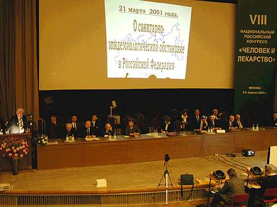
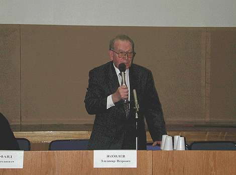
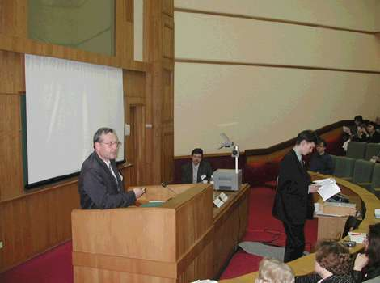
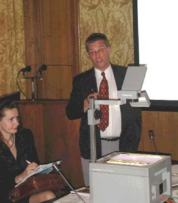
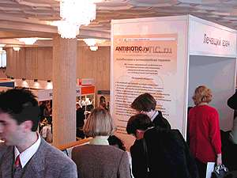
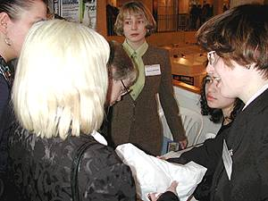

Основные направления работы конгресса, инфекционные болезни и антимикробная химиотерапия, школы для врачей, проблемы и успехи.
Профессор Л.С.Страчунский
Директор НИИ антимикробной химиотерапии
Смоленск
ОСНОВНЫЕ НАПРАВЛЕНИЯ РАБОТЫ КОНГРЕССА
- Профилактика и фармакотерапия инфекционных заболеваний у взрослых и детей
- Современные информационные технологии
- Формулярная система в России
- Стандарты диагностики и лечения наиболее распространенных заболеваний
- Концепция жизненно необходимых лекарств
- Совершенствование рациональной фармакотерапии

Доклад В.И. Покровского
«Инфекционная патология: вчера, сегодня, завтра»
ИНФЕКЦИОННЫЕ БОЛЕЗНИ И АНТИМИКРОБНАЯ ХИМИОТЕРАПИЯ
| Пленарные доклады | 1/4 | |
| Симпозиумы | 19 | 15% |
| Школы | 5/8 | |
| Лекции для практических врачей | 8 | 20% |
| Конкурсы научных работ молодых ученых | 2/5 | |
| Тезисы | 212 | 8% |

Вступительное слово Б.Р. Яковлева на симпозиуме
«Современные возможности и перспективы лечения тяжелых инфекций»
ШКОЛЫ ДЛЯ ВРАЧЕЙ
| Школа | Кол-во сертификатов |
|---|
| Школа по специальности урология | 20 |
| Школа по специальности инфекционные болезни | 21 |
| VI Школа по антимикробной терапии | 76 |
| Школа по специальности пульмонология (в т.ч. фтизиатрия) | 124 |
| Школа по специальности фармакоэпидемиология и фармакоэкономика | 125 |

Клинический разбор Ю.В. Лобзина на Школе для врачей
по специальности «инфекционные болезни»

Доклад Т. Бергмана на школе для врачей
по специальности «фармакоэпидемиология
и фармакоэкономика»
ПРОБЛЕМЫ
- Рост антибиотикорезистентности возбудителей внебольничных и нозокомиальных инфекций (пневмококки, гонококки, микобактерии туберкулеза, синегнойная палочка)
- Сохраняющийся безрецептурный отпуск антибиотиков
- Низкий уровень микробиологических исследований
- Отсутствие инвестиций в разработку отечественных препаратов (эремомицин)
УСПЕХИ
- Рост интереса врачей, особенно молодежи, к вопросам клинической микробиологии и антимикробной химиотерапии
- Активное внедрение лекарственных формуляров, имеющих ограниченный перечень антибиотиков
- Осознание необходимости наличия региональных и локальных данных по антибиотикорезистентности
- Значительное увеличение пользователей современными информационными технологиями
- Впервые открыт стенд портала ANTIBIOTIC.ru
- Впервые на сайте ежедневно появлялись новости о мероприятиях конгресса

